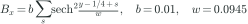

Movie
33 outputs on 128², to t = 3.2. Left to right: GLM (Abel et al.), tiled LLF; CT prototype. A short preview from the ordinary runs of the first campaign; the other movies come from runs that saved 241 outputs.
The localized-field KH with dt divided by 40 for 100 steps at t = 3.0 (run to 3.2). GLM variants that tie c_h to 1/dt see c_h jump 40-fold, so ψ and ∇·B ripples jump; constant-c_h GLM (same kernel as the production path) and CT should not react.
33 outputs on 128², to t = 3.2. Left to right: GLM (Abel et al.), tiled LLF; CT prototype. A short preview from the ordinary runs of the first campaign; the other movies come from runs that saved 241 outputs.
Periodic unit box,  , run to . Flow and field as in the localized test:
, run to . Flow and field as in the localized test:


![v_y = 0.01\,\sin 2\pi x\,\left[e^{-(y-1/4)^2/\sigma^2} + e^{-(y-3/4)^2/\sigma^2}\right],\quad \sigma = 0.2](media/setups/b9e24b3cc46f.svg)

(the sum is over the periodic images): field only around the lower layer.At  the timestep is cut to for 100 steps. With the cleaning speed jumps 40-fold; with a constant it does not.
the timestep is cut to for 100 steps. With the cleaning speed jumps 40-fold; with a constant it does not.
kh_localized with Tomida et al. (2026) sec. III.3 sudden timestep change: at t = 3.0 dt is multiplied by 1/40 for 100 steps, then the run continues to t = 3.2. GPU driver only. glm_hll16 (c_h proportional to 1/dt) and glm_constch share one kernel, isolating the c_h policy. After: Tomida et al. (2026) §III.3. The same initial state goes to every code.
Each set-up on each grid of the sweep. ✓ the run reached the end time; otherwise where its own solver stopped it (a result, not a failed job); · not run.
| set-up | 128² | 256² | 512² |
|---|---|---|---|
| GLM tiled LLF (original path) | ✓ | ✓ | ✓ |
| GLM f16/HLL (production) | ✓ | ✓ | ✓ |
| GLM HLLD | ✓ | ✓ | ✓ |
| GLM PPM | ✓ | ✓ | stopped at t = 2.7 |
| GLM constant ch | ✓ | ✓ | ✓ |
| CT prototype | ✓ | ✓ | ✓ |